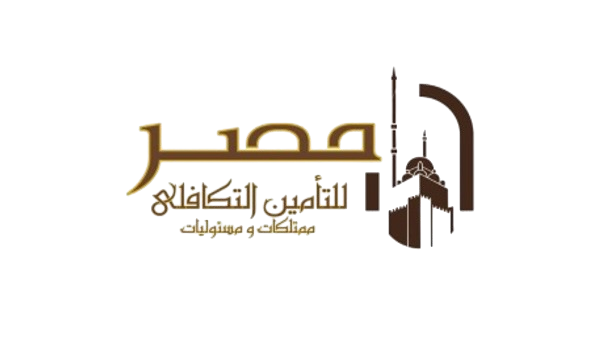

<div id="polices">
    <div class="container-fluid" style="margin: 0; padding: 0;">
        <div class="outerBorder outerItem " style="margin:0px 0px !important;position: relative;">
            <div id="model-offer" class="Prentable" dir="rtl" >
                <i (click)="print()" class="fa-solid fa-print fs-4 px-4 py-2 Non-prentable " style="background-color: #01BACB; border-radius: 0.3rem;cursor: pointer;position: fixed;z-index: 99999;"></i>
                  <div class="header">
                      <div class="logo">
                        
                      <!-- <h1>مصر للتأمين التكافلي</h1>
                        <p>ممتلكات ومسؤوليات</p> -->
                      </div> 
                      <!-- <div class="date">تحديثًا في: 2025/01/14</div> -->
                  </div>
                  <div class="content">
                      <div class="page">
                          <div class="row">
                              <div class="col-8">
                                  <h3 class="main-title">السادة شركة \ Adler</h3>
                              </div>
                              <div class="col-4">
                                <h3 class="main-title">تحريرا: {{ currentDate | date: 'MM/dd/yyyy' }}</h3>
                              </div>
                              <div class="col-8" style="text-align: center;">
                                  <h4 class="main-title">تحية طيبة وبعد...</h4>
                              </div>
                          </div>
                          <p class="introduction">
                              مصر المتأمين التكافلي - ممتلكات ومسئوليات شركة مساهمة مصرية خاضعة لأحكام قانون شركات المساهمة رقم 159 1981 ولائحته التنفيذية، مصر للتأمين التكافلي تمارس نشاطها تحت مظلة قانون الإشراف والرقابة على التأمين في مصر رقم 10 لسنة 1981 ولائحته
              التنفيذية تأسست عام 2017 وحدى الشركات الجديدة التي توفر خدمات التأمين التكافلي في مصر، وهي باكورة إنتاج كبرى المؤسسات المالية في مصر والمتخصصة في مجال التأمين بالإضافة إلى الأنشطة الاستثمارية الأخرى التي تعطى الشركة ميزة تنافسية من حيث قوة وملاءة المساهمين    
                          </p>
                          <h3 class="main-title" style="text-decoration: underline; margin-bottom: 0px;font-size: 1.2rem;">المساهمين</h3>
                          <p class="main-title" style="font-weight: bold;">كما يبلغ رأس المال المصدر 310 مليون جنية مصري ورأس المال المدفوع 310 مليون جنية مصري موزع كالاتي:-</p>
                          <div class="row">
                            <div class="col-5">
                              <div>
                                <p></p>
                                <p> - شركة مصر القابضة للتأمين</p>
                                <p>- شركة مصر لتأمينات الحياة شركة مصر للتأمين</p>
                                <p>- شركة مصر للتأمين</p>
                                <p>- صندوق مصر للتمويل والاستثمار</p>
                                <p>- الشركة القابضة للأدوية والكيماويات والمستلزمات الطبية</p>
                              </div>
                            </div>
                            <div class="col-7">
                              <h3 class="main-title" style="padding-right: 15px;">رأس المال المدفوع</h3>
                              <ul>
                                <li>129,402,480 </li>
                                <li>62,000,000</li>
                                <li>52,224,060</li>
                                <li>34,215,770</li>
                                <li>32,157,690</li>
                              </ul>
                            </div>
                          </div>
                          <div class="row">
                            <p class="introduction">
                                شركة مصر للتأمين التكافلي - ممتلكات ومسئوليات تزاول كافة أنواع التأمين على الممتلكات والمسئوليات . عمل ذو قدرة على إدارة العملية التكافلية
                                ومتخصص في دراسة وتحليل الأخطار التي يمكن أن يتعرض لها الله التأمينية المناسبة لطبيعة الخطر وتحت إشراف اللجنة الشرعية ونذكر منها على سبيل المثال لا الحصر: -
                            </p>
                            <div class="col-2"></div>
                            <div class="col-10">
                              <div class="d-flex">
                                <div class="w-50">
                                  <p> - تأمين الحريق والسطو والأخطار الإضافية.</p>
                                  <p>- تأمين الحوادث المتنوعة ومسؤولياتها.</p>
                                  <p>- التأمين الطبي.</p>
                                  <p>- تأمين ضمان عدم سداد القروض الائتمان.</p>
                                  <p>- تأمين الفنادق الشاملة.</p>
                                  <p>- كما يقوم خبراء من الشركة بتصميم التغطيات المناسبة للأخطار غير التقليدية.</p>
                                </div>
                                <div class="w-50">
                                  <p> - تأمين أخطار العنف السياسي.</p>
                                  <p>- تأمين السيارات الملاكي والتجاري</p>
                                  <p>-  تأمين النقل البحري والبري والجوي</p>
                                  <p>- التأمين الهندسي بأنواعه المختلفة.</p>
                                  <p>- تأمين أخطار الإرهاب والتخريب</p>
                                  <p>- تأمين البترول والطاقة.</p>
                    
                                </div>
                              </div>
                            </div>
                            <div class="col-2"></div>
                          </div>
                          <div>
                            <h2  style="text-align: end;">مصر للتأمين التكافلي-ممتلكات ومسئوليات</h2>
                          </div>
                      </div>
                      <hr>
                      <div class="page page-2">
                        <div class="row">
                          <p class="introduction" style="margin-bottom: 3px;">
              تعتمد استراتيجية الشركة على تحقيق اعلى مستويات الرضاء لعملائها وذلك من خلال تقديم أفضل خدمات التأمين الله الى محدودة من المانية وحرفية متميزة وشفافية مطلقة وهذا سويات العمال الالها والله من خلال والام والاب قاعدة عملاء واسعة ومتجددة من
              الأفراد والشركات من خلال الاتي: -
                          </p>
                          <div>
                            <p style="margin-bottom: 1px;"> - الحفاظ على مصالح العملاء أهم أولويات شركتنا.</p>
                            <p style="margin-bottom: 1px;">- تقديم خدمة متطورة ومتنوعة لعملائنا.</p>
                            <p style="margin-bottom: 1px;">- نشر الوعي التأميني.</p>
                            <p style="margin-bottom: 1px;">- تغطية كافة الاحتياجات التأمينية للعملاء.</p>
                            <p style="margin-bottom: 1px;">- قيادة سوق التأمين التكافلي المصري.</p>
                            <p style="margin-bottom: 1px;">- الاكتتاب بشكل عملي وعادل يحفظ حق العملاء والشركة.</p>
                            <p style="margin-bottom: 1px;">- بناء كوادر شابة على درجة عالية من الخبرة العلمية والعملية إلى سوق التأمين المصري.</p>
                          </div>
                          <h3 class="main-title" style="text-decoration: underline; margin-bottom: 0px;font-size: 1.2rem;">مفهوم التأمين التكافلي</h3>
                          <ul class="custom-list">
                            <li>
                              ينطوي مفهوم التأمين التكافلي على قيام مدير التكافل وهو شركة التأمين) بتحصيل اشتراكات التأمين الفروع التأمين المختلفة مثل تأمينات الحريق والسيارات وخلافة من السادة المشتركين في نظام التكافل ثم يقوم مدير التكافل باستثمار تلك الاشتراكات طبقا. القواعد الشريعة ويتم تجميع تلك الاشتراكات وعوائد الاستثمار في صندوق (صندوق التكافل) يستخدم في سداد المطالبات للسادة المشتركين في حالة تحقق الخطر المؤمن منه ثم تقوم الشركة المدير التكافل) بتغطية نفقتها الإدارية والباقي في نهاية العام يتم توزيعة بين المشتركين في نظام التكافل ومساهمي الشركة (أصحاب </li>
                            <li>
                              تستخدم شركات التأمين التكافلي عددا من النماذج التشغيلية المختلفة أو مزيج منها، وفيما يلي أهم هذه النماذج -  
                              <ol type="1">
                                <li>نموذج المضاربة</li>
                                <li>نموذج الوكالة</li>
                              </ol>            
                            </li>
                            <li>شركة مصر للتأمين التكافلي تعتمد على نموذج المضاربة</li>
                            <li>
                              نموذج المضاربة هو نموذج لتقاسيم الأرباح حيث يقدم المساهمون راس المال ويقدم المشتركين في نظام التكافل اشتراكات، ويحدد العقد كيفية تقسيم الربح (الفائض من العمليات وفقا لمبادئ المضاربة، وبشكل عام، تسمح ترتيبات المشاركة للمساهمين
                            </li>
                          </ul>
                          <h3 class="main-title" style="text-decoration: underline; margin-bottom: 0px;font-size: 1.2rem;">أحكام التأمين التكافلي</h3>
                            <p class="introduction" style="margin-bottom: 0px;">
                              طبقاً لهذه الوثيقة يعتبر المشترك مشتركة مع غيره من المشتركين على أساس تكافلي لدى شركة مصر للتأمين التكافلي - ممتلكات ومسئوليات والمنوه عنها فيما بعد بالشركة وتعتبر الشركة مديراً لنظام التأمين بصيغة المضارية    .
                            </p>
                          <h3 class="main-title" style="text-decoration: underline; margin-bottom: 0px;font-size: 1.2rem;">مفهوم نظام المضاربه</h3>
                          <p class="introduction" style="margin-bottom: 0px;">
                            بيلتزم المشتركون في نظام التكافل بدفع مبلغ معين يسمى الاشتراك، وتقوم الشركة بإدارة عمليات التأمين التكافلي واستثمار أموال صندوق حملة الوثائق باعتبارها مضارباً وذلك مقابل حصة شائعة من فائض النشاط التأميني بما يتفق مع أحكام الشريعة الإسلامية ومبادئها   .
                          </p>
                          <h3 class="main-title" style="text-decoration: underline; margin-bottom: 0px;font-size: 1.2rem;">أسس علاقة التأمين التكافلي بين الشركة والمشترك</h3>
                          <p class="introduction" style="margin-bottom: 0px;">
              
                            يعتبر قبول وثيقة التأمين الصادرة من شركة مصر للتأمين التكافلي - ممتلكات ومسئوليات المدير النظام التأمين بصيغة المضاربة موافقة صريحة من المشترك بالمشاركة مع غيره من المشتركين بنظام التكافل والتي ينظم تكوينها عقد التأسيس والنظام الأساسي للشركة، على أن يتم توزيع صافي الفائض من حساب المشتركين في نهاية السنة المالية وفقاً للوائح التي تضعها الشركة وموافقة الهيئة الشرعية عليها.
                          </p>
              
                        </div>
                      </div>
                      <hr>
                      <div class="page page-2">
                        <h3 class="main-title" style="text-decoration: underline; margin-bottom: 0px;font-size: 1.2rem;">السياسات الاستثمارية التي تتبعها شركة مصر للتأمين التكافلي - ممتلكات ومسئوليات</h3>
                        <p class="introduction">
                          يتم استثمار أموال
              الشرعية المشكلة بالشركة وبما يتفق مع أحكام قانون الإشراف والرقابة على التأمين فى مصير ولائحته التنفيذية والقرارات الصادرة تنفيذاً لهماء صندوق المشتركين بنظام التكافل بأوعية استثمارية متوافقة مع أحكام ومبادى الشريعة الإسلامية والمعتمدة من هيئة الرقابة المصرية والمتوافقة مع مبادئ الشريعة الإسلامية والمقبولة من لجنة الرقابة الشرعية بالشركة ووثائق صناديق الاستثمار الإسلامية والودائع بالبنوك الإسلامية وأية أدوت مالية أخرى تقرها لجنة الرقابة الشرعية بالشركة.
                        </p>
                        <h3 class="main-title" style="text-decoration: underline; margin-bottom: 0px;font-size: 1.2rem;">صندوق المشتركين</h3>
                        <p class="introduction">- هي مجموعة من الحسابات التي تتشتها شركة مصر للتأمين التكافلي وفقاً لمتطلبات دليل تطبيق معايير المحاسبة على قطاع التأمين، ويتضمن الصندوق أصول والتزامات وحقوق المشتركين حيث تودع به الاشتراكات وعوائدها ويخصم منة التعويضات المدفوعة للمشتركين والمخصصات الفنية والاحتياطيات وسائر المصروفات الخاصة بصندوق المشتركين وكذا خصم حصة أصحاب حقوق الملكية مقابل أدارة عمليات التأمين
              
                          وأنشطة الاستثمار المستحقة وجميع المصروفات 
                        </p>
                        <P class="introduction">- في حالة وجود عجز في صندوق حملة الوثائق يتم منح الصندوق قرضا حسناً من أموال المساهمين يسدد من فوائض الصندوق في السنوات اللاحقة </P>
                        <h3 class="main-title" style="text-decoration: underline; margin-bottom: 0px;font-size: 1.2rem;">توزيع الفائض التأميني</h3>
                        <p class="introduction"> -
                          تتحدد بوجه خاص علاقة الشركة بالمشترك بشأن استحقاقات هذا الأخير لنصيبه من صافي الفائض التأميني القابل للتوزيع الذي يتحقق في التأمين لدى الشركة في نهاية السنة المالية بموجب النظام الأساسي للشركة وبما لا يقل عن 40% من صافي الفائض التأميني
                          
                          حساب عمليات المحقق بعد تكوين ما يلزم من الاحتياطيات والمخصصات اللازمة وتغطية سائر المصروفات الخاصة بصندوق حملة الوثائق
                        </p>
                        <p class="introduction">
                          -
                          يتم توزيع صافي الفائض من حساب المشتركين في نهاية السنة المالية على جميع حملة الوثائق بنسبه اشتراكهم (الأقساط) دون التفرقة بين
              توزيع الفائض التأميني    
              من حصل على تعويضات ومن لم يحصل خلال الفترة المالية وذلك وفقا للوائح التي تضعها الشركة وموافقة لجنة الرقابة الشرعية عليها.
                        </p>
                        <p class="introduction">-  في حالة عدم استلام أحد المشركين لحصته من الفائض التأميني يتم الاحتفاظ به لدى الشركة لمدة خمس سنوات ثم يعرض الأمر على لجنة الرقابة الشرعية بالشركة لتحديد كيفية التصرف فيه والحصول على موافقة مسبقة من الهيئة العامة للرقابة المالية.</p>
                        <h3 class="main-title" style="text-decoration: underline; margin-bottom: 0px;font-size: 1.2rem;">أجر المضاربة</h3>
                        <p class="introduction">
                          تدير الشركة كل من أعمال التأمين والاستثمار بصفتها مضارباً وذلك نيابة ولصالح المشتركين في نظام التكافل، وتتقاضي الشركة مقابل إدارتها حصة شائعة من فائض النشاط التأميني بحد أقصى 60% من الفائض المحقق بعد تكوين ما يلزم من الاحتياطيات والمخصصات اللازمة وتغطية سائر المصروفات الخاصة بصندوق المشتركين وذلك وفقاً للنظام الأساسي للشركة.
                        </p>
                      </div>
                      <hr>
                      <div class="page page-2">
                        <h3 class="main-title" style="text-decoration: underline; margin-bottom: 0px;font-size: 1.2rem;">هيئة القابة الشرعية المشكلة بالشركة</h3>
                        <P class="introduction">
              تخضع كل من أعمال التأمين وأنشطة الاستثمار بالشركة الرقابة وإشراف هيئة الرقابة الشرعية المشكلة بالشركة للتحقق من توافق معاملاتها مع مبادئ الشريعة الإسلامية، وقد تم اعتماد تشكيل لجنة الرقابة الشرعية من الهيئة العامة للرقابة المالية بتاريخ 2019/9/25، وفيما يلي تشكيل هيئة 
                        </P>
                        <ul class="custom-list">
                          <li>أ.د/ على جمعة محمد عبد الوهاب (رئيس اللجنه)</li>
                          <li>أ.د/ رفعت السيد العوضي(عضو اللجنه)</li>
                          <li>أ.د/ مجدي محمد محمد عاشور ( عضو اللجنة ومراقب شرعي)</li>
                        </ul>
                        <p class="introduction" style="margin-right: 50px;">
                          تم الحصول على موافقة هيئة الرقابة الشرعية على وثيقة تأمين العلاج الطبي للمجموعات في 2023/12/24
                        </p>
                        <p class="introduction">
                          طبقا لهذه الوثيقة يعتبر المشترك مشتركا مع غيره من المشتركين على أساس تكافلي لدى شركة مصر للتأمين التكافلي ممتلكات ومسئوليات والمنوه عنها فيما بعد بالشركة وتعتبر الشركة مديراً لنظام التأمين وتقوم باستثمار اشتراكات التأمين كليا أو جزئياً على أساس عقد المضاربة نظير حصة شائعة للشركة من الربح بصفتها مضارباً وتحدد هذه الحصة في الإعلان العام في مركز الشركة وفروعها قبل بداية كل عام ميلادي، وتتحدد بوجه خاص علاقة الشركة بالمشترك بشأن استحقاقات هذا الأخير النصيبه من صافي الفائض التأميني الذي يتحقق في حساب عمليات التأمين لدى الشركة في نهاية السنة المالية بموجب اللائحة التي يضعها مجلس إدارة الشركة وبما لا يقل عن 40% من الفائض التأميني المحقق بعد تكوين ما . يلزم من الاحتياطيات والمخصصات اللازمة وتغطية نفقاتها الإدارية
                        </p>
                        <hr>
                        <p class="introduction">
                          من منطلق الخبرات المهنية بالشركة فان إدارة الشركة تتعامل مع نخبة من أفضل معيدي التأمين العالميين ذوي الملاءة المالية العالية والتقييم
              
              أما فيما يتعلق بالتأمين الطبي فقد تم تصميم برامجه بحيث تضمن حصول العملاء على أفضل مزايا كما تم التعاقد مع كبرى شركات إدارة برامج المتميز والسمعة الطيبة والمعتمدين من الهيئة العامة للرقابة على التأمين. العلاج الطبي المتخصصة ضمانا لتقديم خدمة متميزة للعملاء المشتركين .... مع أطيب تمنياتنا للجميع بدوام الصحة.
              
              يسر شركة مصر للتأمين التكافلي - ممتلكات ومسؤوليات أن تتقدم إلى سيادتكم يعرض البرامجها العلاجية للتعامل معكم في تطوير نظام العلاج المعمول به باستخدام أحدث وسائل تكنولوجيا حفظ وتحليل المعلومات والرقابة المستمرة من قبل أطباء متخصصين لضمان جودة مستوى الخدمة الطبية والارتقاء بها وترشيد تكلفة العلاج وثبات ميزانية العلاج الطبي السنوية.
              
              وتدير شركة الرعاية الصحية التابعة لشركة مصر للتامين التكافلي - ممتلكات ومسئوليات برامج العلاج الطبي لكافة الشركات والهيئات لجميع مستويات العلاج للمجموعات والأسر من خلال شبكة كبيرة من مقدمي الخدمة بالقاهرة وجميع محافظات الجمهورية مما يتيح للعميل تلقى الخدمة الطبية حيثما وجد وبذلك تعطى الشركة المصداقية والثقة الكاملة للعميل حيث يشرف على إدارة برامج شركة مصر للتأمين التكافلي - ممتلكات ومسئوليات نخبة من المتخصصين والخبراء في مجال إدارة الخدمات الطبية داخل مصر.
              
                        </p>
                      </div>
                      <div class="page page-2">
                        <div class="text-center" style="margin-bottom: 0px;">
                          <h3 class="main-title" style="text-decoration: underline; margin-bottom: 0px;font-size: 1.2rem;">الشروط والأحكام</h3>
                        </div>
                        <h3 class="main-title" style="margin-bottom: 0px;font-size: 1.2rem;">فترة سريان الوثيقة</h3>
                        <p class="introduction" style="margin-bottom: 0px;">
                          مدة هذه الوثيقة سنة واحدة بشرط سداد المشترك اشتراك التأمين المطلوب ويبدأ سريان الوثيقة وتنتهي كما هو محدد بجدول الوثيقة.
                        </p>
                        <h3 class="main-title" style="margin-bottom: 0px;font-size: 1.2rem;">شروط التغطية التأمينية .</h3>
                        <p class="introduction" style="margin-bottom: 0px;">
                          لكي يستفيد المشتركين المذكورين في جدول الوثيقة بالتغطية التأمينية فانة يجب عليهم استيفاء الشروط التالية:
                        </p>
                        <h3 class="main-title" style="margin-bottom: 0px;font-size: 1.2rem;">المشترك الأساسي:.</h3>
                        <ul class="custom-list"  style="margin-bottom: 0px;">
                          <li>
                            جميع العاملين الدائمين بنظام اليوم الكامل، والمسجلين لدى المؤسسة العامة للتأمينات الاجتماعية على أن يكون الموظف في الخدمة أو في الإجازة السنوية الاعتيادية عند تاريخ الانضمام. وإذا كان الموظف متغيبا عن العمل الأسباب مرضية أو بسبب الإصابة فان التغطية سوف تبدأ بعد إكماله الأسبوعين متتاليين بعد الرجوع إلى الخدمة.
                          </li>
                          <li>الأعضاء العاملين لدى مؤسسة قانونية والذين تتراوح أعمارهم من 18 إلى 60 عاما عند تاريخ الانضمام ويجوز استمرار التغطية التأمينية للمشترك الأساسي حتى بلوغه 65 إذا كان تأمينه مستمرا من قبل سداد لاشتراك تجديد التأمين.</li>
                        </ul>
                        <h3 class="main-title" style="margin-bottom: 0px;font-size: 1.2rem;">المعالون: يستحق المعالون التابعون للمشترك الأساسي التغطية التأمينية بموجب هذه الوثيقة وفقا للشروط التالية:</h3>
                        <ul class="custom-list"  style="margin-bottom: 0px;">
                          <li>
                            الزوج أو الزوجة للمشترك الأساسي الذين يقيمون معه ويقل عمرهم عن 60 عاماً عن تاريخ الانضمام. 
                          </li>
                          <li>
                            الأولاد غير المتزوجين والأولاد المتبنين قانونياً من قبل المشترك الأساسي بشرط أن يكون عمرهم عند تاريخ الانضمام 14 يوما كحد
              
              أدنى و 18 سنة كحد أقصى ويقيمون مع المشترك الأساسي ويمولهم، ويجوز استمرار التغطية التأمينية عند تقديم مستندات تثبت أنهم لا يزالون طلاب بنظام اليوم الكامل في مدرسة أو كلية أو جامعة وأنهم لم يتجاوزوا 24 عاماً من عمرهم شرط أن يكونوا مشمولين
              
              بوثيقة التأمين وملحقاتها.
                          </li>
                          <li> أذا كان أي معال مستحقا للاشتراك كمشترك أساسي تحت هذه الوثيقة فلا يجوز له الاستمرار كمعال .</li>
                          <li>
                            وفى حالة كون الزوجين مؤمنين كمشترك أساسي يكون الأولاد مستحقين التغطية كمعالين عن طريق الزوج فقط.
                          </li>
                        </ul>
                        <h3 class="main-title" style="margin-bottom: 0px;font-size: 1.2rem;">حدود المسئولية -</h3>
                        <p class="introduction" style="font-weight: 500;">- الحدود القصوى السنوية تقتصر مسئولية الشركة على مبلغ الحد الأقصى للتغطية والحدود الفرعية المذكورة في جدول الوثيقة
                          وجدول المنافع
                        </p>
                        <p class="introduction">المصاريف الطبية تقتصر مسئولية الشركة بالنسبة للمصاريف الطبية المطالب بها على التكاليف الفعلية أو التكاليف المعقولة
              
                          والمعتادة أيهما أقل، وللشركة الحق في تحديد مقدار التكاليف المعقولة والمعتادة). ويجوز للمشترك إذا كان لديه اعتراض على ذلك
                          
                          التقدم بطلب أسعار وذلك للحصول على الموافقة المسبقة من الشركة قبل تلقي العلاج.
                          
                        </p>
                        <p class="introduction">الحدود الجغرافية: تخضع هذه الوثيقة للمصاريف الطبية التي يتكفلها العلاج في الحدود الجغرافية المذكورة في جدول الوثيقة
                          وجدول المنافع
                        </p>
                        <h3 class="main-title" style="margin-bottom: 0px;font-size: 1.2rem;">إلغاء الوثيقة .</h3>
                        <p class="introduction">- 
                          ينتهي سريان الوثيقة تلقائياً دون الحاجة إلى إنذار أو إعذار أو اتخاذ أي إجراء قانوني آخر، إذا لم يلتزم المشترك بسداد الاشتراك المذكور في جدول الوثيقة في تاريخ السريان.
                        </p>
                        <p class="introduction">-
                          لأي من الطرفين الحق في إلغاء الوثيقة في أي وقت وذلك بإعطاء الطرف الآخر إخطارا كتابيا مدته 30 يوماً بالرغبة في إلغاء الوثيقة. ويحق للمشترك استرداد الاشتراك النسبي المدفوع للفترة المتبقية من تاريخ إلغاء الوثيقة وحتى تاريخ انتهائها بعد استقطاع 20% من الاشتراك السنوي لجميع المشتركين الذين لم يسجلوا أي مطالبات ولن تقوم الشركة برد أي نسبة من اشتراك المشتركين الذين
                          
                          تقدموا بأي مطالبات قبل إلغاء الوثيقة.
                          
                        </p>
                        
                      </div>
                      <hr>
                      <div class="page page-2">
                        <p class="introduction">
                          - 
                          يلتزم حامل الوثيقة بإعادة جميع بطاقات العضوية بالإضافة إلى أي وثائق أو مستندات خاصة بتسهيل العلاج وذلك قبل تاريخ الغام الوثيقة، وفي حالة عدم الالتزام بذلك يكون حامل الوثيقة هو المسؤول الوحيد أمام مقدمي الخدمة الطبية و/أو الشركة فيما يتعلق بأي
                          
                          مصاريف تحدث عن طريق المشتركين ابتداء من تاريخ الغاء الوثيقة.            
                        </p>
                        <p class="introduction">- 
                          يحق للشركة إلغاء التغطية التأمينية لاي عضو مشترك في الحال وإيقاف جميع المنافع ومصادرة الاشتراكات لهذا العضو، ودون المساس بحقوق باقي الأعضاء الآخرين المشتركين، إذا تقدم أي من الأعضاء المشتركين بأي مطالبة تنطوي على غش أو تدليس بغرض
                          
                          الأخلال بشروط وأحكام الوثيقة. 
                        </p>
                        <p class="introduction">-  تتوقف جميع المنافع الممنوحة للمشتركين فور إلغاء الوثيقة أو عدم </p>
                        <h3 class="main-title" style="margin-bottom: 0px;font-size: 1.2rem;">تسجيل الأعضاء -</h3>
                        <p class="introduction"> - المشترك الأساسي : تبدأ تغطية المشتراك الأساسي عند بدء سريان الوثيقة.</p>
                        <p class="introduction"> - المعالون: يستحق المعالون التابعين للمشترك الأساسي التغطية عند تاريخ السريان، ويجب على المشتراك إدراج جميع المعالين الحاليين ابتداء من تاريخ السريان، أما بالنسبة للمعالين الغير مدرجين وقت إصدار الوثيقة فيتم إدراجهم في التغطية التأمينية عند. التجديد التالي للوثيقة.</p>
                        <p class="introduction">- الإضافة: يحق لحامل الوثيقة في أي وقت إضافة المعالين الجدد، وذلك باستكمال وإرسال استمارة طلب الإضافة إلى الشركة بالإضافة إلى المستندات المؤيدة الآتية:</p>
                        <div style="margin-right: 15px;">
                          <p style="margin-bottom: 0px;">أ-شهادة التوظيف للمشتركين الأساسيين الجدد معتمدة من الهيئة العامة للتأمينات الاجتماعية.</p>
                          <p style="margin-bottom: 0px;">ب -شهادة زواج للزوجات / الأزواج.
                          </p>
                          <p style="margin-bottom: 0px;">ت -شهادة ميلاد للمواليد الجدد.</p>
                          <p style="margin-bottom: 0px;">ج - يكون للمشترك الأساسي و / أو المعالين مؤهلين للتغطية من تاريخ استلام طلب الإضافة.
                          </p>
                          <p style="margin-bottom: 0px;">ويحتسب اشتراك الإضافة على النحو التالي :</p>
                          <p style="margin-bottom: 0px;">أ -
                            أ. قبل انقضاء العشرة شهور الأولى للوثيقة: نسبة من قيمة الاشتراك السنوي للفترة المتبقية من الوثيقة حتى تاريخ الانتهاء.
                          </p>
                          <p>ب -بحد أدنى 25% من الاشتراك السنوي وذلك لأي إضافة ابتداء من الشهر العاشر.</p>
                          <p style="margin-bottom: 0px;">
                            الحذف يحق لحامل الوثيقة في أي وقت حذف المشترك الأساسي والمعالين له من الوثيقة عند استكمال وإرسال استمارة طلب
                          </p>
                          <p style="margin-bottom: 0px;">الحذف إلى الشركة وفقا للشروط التالية:</p>
                          <p>أ -استيفاء استمارة طلب الحذف الصادرة من قبل الشركة.</p>
                          <p>ب -إعادة بطاقات العضوية وأي وثائق أو مستندات لتسهيل العلاج قبل تاريخ الحذف. ويعتبر الحذف ساري المفعول من تاريخ استلام الشركة لطلب الحذف.</p>
                          <p>ت -يتم احتساب الاشتراك المرتد للمشترك المتعلق بأي حذف من الوثيقة موافق عليه حسب الشروط الآتية:</p>
                          <p>أ )عدم رد أي مبلغ للمشترك الذي تم حذفه في حالة تسجيله لأي مطالبة المعالين الذين لم يسجلوا أي مطالبات قبل تاريخ الحذف يحق لهم استرداد جزء نسبى من الاشتراك عن الفترة المتبقية، ابتداء من تاريخ الحذف حتى تاريخ الانتهاء. وفي حالة عدم تسجيل أ مطالبات خلال تلك الفترة تقوم الشركة برد المبلغ المستحق بعد 90 يوماً من تاريخ الحذف</p>
                          <p>ب )عدم رد أي مبلغ في حالة عدم تسليم المشتركين بطاقات العضوية والوثائق الأخرى المتعلقة بتسهيل عملية العلاج. كما يتم تخفيض قيمة الاشتراك المرتد في حالة التأخير في إرجاع تلك المستندات بما يتناسب وفترة التأخير ويكون حامل الوثيقة المسؤول الوحيد تجاه مقدمي الخدمة الطبية و/أو الشركة عن أي مصاريف تحدث عن طريق المشترك المحذوف وذلك ابتداء من تاريخ الحذف وحتي يتم تسليم تلك المستندات.</p>
                          
                        </div>
    
                    </div>
                    <hr>
                    <div class="page page-2">
                        <p>ج )عند حذف مشارك أساسي من الوثيقة، تتوقف فور الحذف التغطية التأمينية بالنسبة للأشخاص المعالين.</p>
                        <h3 class="main-title" style="margin-bottom: 0px;font-size: 1.2rem;"> اشترك التأمين:-</h3>
                        <p class="introduction">- 
                            يجب أن يسدد حامل الوثيقة المشترك إلى الشركة الاشتراك المذكور في جدول الوثيقة في تاريخ السريان
                        </p>
                        <p class="introduction">- سداد اشتراك التأمين في مسئولية حامل الوثيقة المشترك إذا لم يتم السداد في تاريخ السريان فإن للشركة الحق في الامتناع عن دفع
                            مبالغ المطالبات المستحقة للمشتركين و أو الحصول على العلاج أو الغاء الوثيقة
                        </p>
                        <p class="introduction">- 
لا يحق للمشترك خصم اشتراك التأمين المستحق عليه من مبالغ المطالبات التي يستحقها أو أية مبالغ أو مطالبات أخرى يستحقها أو يطالب بها الشركة تحت هذا الاتفاق أو غيره من الاتفاقات الأخرى إلا بموافقة الشركة الكتابية المسبقة.
                        </p>
                        <h3 class="main-title" style="margin-bottom: 0px;font-size: 1.2rem;">تعديل الوثيقة -</h3>
                        <p class="introduction">- لن يؤخذ في الاعتبار أي اقتراح لتعديل أياً من شروط وأحكام هذه الوثيقة غير تلك المذكورة والموضحة تحت بند رقم 5.5 إلا عند تجديد الوثيقة</p>
                        <p class="introduction">- 
                            يحق للشركة عند تجديد الوثيقة إضافة أو تعديل أياً من الشروط الخاصة الواردة بجدول الوثيقة بما في ذلك الاشتراكات أو أي من الإجراءات الإدارية.
                        </p>
                        <p class="introduction"> -تحتفظ الشركة بالحق في إلغاء هذه الوثيقة في أي وقت بغض النظر عما هو منصوص عليه من شروط في هذه الوثيقة إذا قام حامل</p>
                        <p class="introduction"> الوثيقة أو المشترك بما يلي:</p>
                        <p>أ- تصرف بسوء نية وقام بتضليل الشركة عن طريق إخفاء أية حقائق جوهرية وأساسية أو أدلى بابة بيانات غير صحيحة في طلب التأمين الوثيقة</p>
                        <p class="introduction">ب-توقف عن الإقامة في بلد الإقامة لمدة تزيد عن 180 يوماً خلال فترة سريان الوثيقة. وقت إصدار الوثيقة .</p>
                        <p class="introduction">ت -قام بالإخلال ببنود هذه الوثيقة.</p>
                        <p class="introduction">ث- لم يسدد الاشتراك المستحق.</p>
                        <h3 class="main-title" style="margin-bottom: 0px;font-size: 1.2rem;"> السجلات الطبية -</h3>
                        <p class="introduction"> - 
                            تماشياً مع القوانين والأنظمة المطبقة بخصوص السجلات الطبية ونيابة عن المشترك والأشخاص المعالين، فأن المشترك والمعالين يفوضون الشركة بحق الاطلاع على سجلاتهم الطبية بالإضافة إلى حق الحصول على نسخ من تلك السجلات التي توجد عند مقدم الخدمة الطبية المرتبطة بالعلاج الذي يتم حسب شروط هذه الوثيقة.
                            
                            تتعهد الشركة بالاحتفاظ بهذه المعلومات وبصور السجلات الطبية في سرية تامة.
                        </p>
                        <h3 class="main-title" style="margin-bottom: 0px;font-size: 1.2rem;">الاسترداد: -</h3>
                        <div style="margin-right: 25px;">
                            <p class="introduction">
يحق للشركة استرداد كافة تكاليف المطالبات المدفوعة من قبلها إلى المستشفيات المدرجة عن المشتركين وذلك من حامل الوثيقة بموجب شروط هذه الوثيقة في الحالات التالية:
                            </p>
                            <p class="introduction">
                              أ -إذاكان العالج غير مغطي بموجب الوثيقة.
                            </p>
                            <p class="introduction">ب -إذا دفعت المطالبات للمشتركين غير مستحقين لتلك المطالبات</p>
                            <p class="introduction">ت -إذا كانت المطالبات مدفوعة للمشتركين خلال أي فترة لم يكن الاشتراك المستحق عنها مسدداً.</p>
                            <p class="introduction">ث -إذا تم استعمال بطاقة العضوية لأغراض احتيالية عن طريق أي من المشتركين.</p>
                        </div>
                    </div>
                    <hr>
                    <div class="page page-2">
                      <h3 class="main-title" style="margin-bottom: 0px;font-size: 1.2rem;">ادارة المطالبات:-</h3>
                      <div style="margin-right: 50px;">
                        <h3 class="main-title" style="margin-bottom: 0px;font-size: 1.1rem;"> اخطار بالمطالبة:</h3>
                        <p class="introduction">- 
                          يجب أن يكون الإخطار بالمطالبة عن طريق تقديم استمارة المطالبة مستوفاة الجميع البيانات مع المستندات المؤيدة الأعرافة.
                          خلال فترة لا تتجاوز 30 يوماً من تاريخ العلاج وتشمل المستندات المؤيدة الآتي.
                        </p>
                        <div>
                          <p class="introduction">أ-الوصفة الطبية الأصلية</p>
                          <p class="introduction">ب-إيصال السداد الأصلي مع التفاصيل والتاريخ.</p>
                          <p class="introduction">ت- استمارة الموافقة المسبقة إذا كانت مطلوبة.</p>
                          <p class="introduction">ث-التقارير الطبية والتشخيصية الأصلية كاملة ومفصلة.</p>
                          <p class="introduction">ج- أية معلومات طبية قد تكون ضرورية للشركة.</p>
                        </div>
                        <h3 class="main-title" style="margin-bottom: 0px;font-size: 1.1rem;">تسوية المطالبة:</h3>
                        <p class="introduction">- السداد المباشر: ترتبط الشركة باتفاقيات تسمح لها بسداد المطالبات مباشرة المقدمي الخدمة الطبية المعتمدين ويمكن
                          للمشتركين استخدام التسهيلات المقدمة من قبل مقدمي الخدمة الطبية المعتمدين عن طريق إبراز بطاقات عضويتهم المقدمي الخدمة الطبية عند الزيارة وإذا قام المشترك بسداد تكاليف العلاج المقدم خدمة طبية معتمد فأن الشركة ستقوم بدفع المطالعة للمشترك حسب  التكاليف المتفق عليها بين الشركة ومقدم الخدمة الطبية.
                        </p>
                        <p class="introduction">-  إذا تلقى المشترك العلاج عند مقدمي الخدمة الطبية غير المعتمدين، فأن الشركة سوف تقوم بدفع التكاليف المستحقة للمشترك في فترة لا تتجاوز 14 يوم عمل بشرط أن تقدم استمارة المطالبة مستوفاة الجميع البيانات، ومرفق بها جميع المستندات المؤيدة للمطالبة، كما هو موضح في بند رقم 1.1.6 والتي يجب أن تقدم خلال فترة لا تتجاوز 30 يوماً من تاريخ العلاج وتلتزم الشركة بسداد التكاليف المعقولة والمعتادة للعلاج الطبي الضروري مستقطعاً منه آية مبالغ تحمل و/أو المشاركة

                          في المطالبة كما هو موضح في جدول الوثيقة وجدول المنافع ونطاقات العضوية.
                        </p>
                        <h3 class="main-title" style="margin-bottom: 0px;font-size: 1.1rem;">رفض المطالبة:</h3>
                        <h3 class="main-title" style="margin-bottom: 0px;font-size: 1.1rem;"> للشركة الحق في رفض أو إعادة أي مطالبة مقدمة إليها إذا احتوت على أمر من الأمور التالية:</h3>
                        <p class="introduction">1- إذا كانت استمارة المطالبة غير مستوفاة البيانات.
                        </p>
                        <p class="introduction">2- عدم إرفاق نسخ أصلية للإيصالات أو الوصفات الطبية والخدمات التشخيصية أو المستندات الأخرى.
                        </p>
                        <p class="introduction">3- عدم توقيع وختم استمارة المطالبة من قبل الطبيب.
                        </p>
                        <p class="introduction">4- إرفاق أوراق فحوصات أو روشتات الأدوية خلافاً للموصوف من الطبيب أو الاستشاري.</p>
                        <p class="introduction">5- إرفاق أوراق تشخيص أو علاج غير مناسب طبياً.
                        </p>
                        <p class="introduction">6- إرفاق أوراق فحوصات وأدوية أو علاج يشترط موافقة مسبقة بموجب شروط وأحكام هذه الوثيقة ولم تتوفر فيها تلك الموافقة
                          المسبقة.
                          </p>
                        <p class="introduction">7- إرفاق أوراق خدمات ضمن الاستثناءات العامة للوثيقة.
                        </p>
                        <p class="introduction">8- إرفاق أوراق فحوصات أو عقاقير أو علاج غير ضروري طبياً وفقاً للشروط المنصوص عليها بالوثيقة.
                        </p>
                        <p class="introduction">9- إرسال مطالبة بعد 30 يوماً من تاريخ الحصول على العلاج( مالم يكن هناك عذر مقبول).
                        </p>
                        <p class="introduction">10- اشتمال المطالبة على علاج تم بعد تاريخ انتهاء الوثيقة.
                        </p>
                        <p class="introduction">11- اشتمال المطالبة على علاج ثم قبل تاريخ انضمام المشترك أو قبل تاريخ السريان.
                        </p>
                      </div>
                    </div>
                    <hr>
                    <div class="page page-2">
                      <h3 class="main-title" style="margin-bottom: 0px;font-size: 1.2rem;">استئناف المطالبة المرفوضة:-</h3>
                      <p class="introduction">- 
                        تعتبر تسوية المطالبات نهائية إلا إذا اعترض عليها المشترك وذلك بتقديم جميع المبررات المؤيدة لهذا الاعتراض كتابة خلال فترة لا تتجاوز شهر واحد من تاريخ استلام المدفوعات أو الرفض بالإضافة إلى التقارير المناسبة، وللشركة الحق في رفض أي اعتراضات تسلم بعد هذه المدة.</p>
                      <p class="introduction">- تقوم الشركة بمراجعة تلك الاعتراضات ودراستها ويتم الدفع لأي مطالبة تم الموافقة عليها خلال 14 يوما من تاريخ استلام
                        الاعتراضات
                      </p>
                      <h3 class="main-title" style="margin-bottom: 0px;font-size: 1.2rem;">الموافقة المسبقة:-</h3>
                      <ul class="custom-list">
                        <li>موافقة الشركة المسبقة على العلاج مطلوبة قبل تلقى المشترك أي من الخدمات العلاجية التالية: 
                          <div style="margin-right: 20px;">
                            <p class="introduction">أ- 
                              كافة العلاجات والخدمات المتعلقة بالعلاج الداخلي والرعاية اليومية كما هي موضحة تحت بند رقم 1.3 من هذه الوثيقة.
                            </p>
                            <p class="introduction">ب- الفحص بالأشعة المقطعية والفحص بالرنين المغناطيسي
                            </p>
                            <p class="introduction">ت- جلسات العلاج الطبي
                            </p>
                            <p class="introduction">ث- فحوصات العيادات الخارجية التالية: المناظير وفحص مستوى الهرمونات وفحوصات المناعة مثل فحص الغدة الدرقية و امیونو في كسيشن اليكتروفوريسيس وفحص المضادات المناعة الجسم وما شابه وفحص القلب بالموجات الصوتية وفحص الضغوط

                              و جهاز مراقبة دقات القلب واية فحوصات أخرى ذات طبيعة مشابهة.</p>
                            <p class="introduction">ج- العلاجات طويلة الأمد أكثر من شهر واحد.
                            </p>
                            <p class="introduction">ح- علاج
                              الحمل للمرضى الداخليين المحجوزين بالمستشفى إما للولادة أو لحدوث مضاعفات أثناء الحمل.
                            </p>
                          </div>
                        </li>
                        <li>في الحالات الطارئة يجب على المشتراك إخطار الشركة خلال 24 ساعة من دخوله أو خروجه من مقدم الخدمة الطبية للشركة حق
رفض أي طلب الموافقة مسبقة للحالات الطارئة التي تتجاوز فترة 24 ساعة دون أن يتم إخطارها بها ما لم يكن هناك عذر مقبول). </li>
                        <li>تكون الموافقة المسبقة صالحة لمدة لا تتجاوز 14 يوماً من تاريخ الإصدار يجب على المشترك إعادة الحصول على الموافقة
                          المسبقة إذا لم يستخدم الموافقة الممنوحة له خلال الأربعة عشر يوماً المذكورة أعلاه.                        </li>
                        <li>خلافا للبند رقم 3,5,6، فإن الموافقة المسبقة تنتهي صلاحيتها حالاً بتاريخ حذف المشترك أو إنهاء سريان الوثيقة
                        </li>
                        <li>
الموافقة المسبقة لا تضمن المدفوعات أو مبلغ المطالبات إن استحقاق دفع المطالبات يشترط فيه مراجعة التقارير الطبية التفصيلية ونتائج الفحوصات ونتائج التشخيص وملخص المخالصة والعلاج الطبي الضروري بالإضافة إلى جميع أحكام وشروط  
واستثناءات الوثيقة.
                        </li>
                      </ul>
                      <h3 class="main-title" style="margin-bottom: 0px;font-size: 1.2rem;text-decoration: underline;">الإجراءات المتبعة للحصول على الخدمة (إذا ما تضمنت الوثيقة هذه التغطيات)</h3>
                      <h3 class="main-title" style="margin-bottom: 0px;margin-right: 20px; font-size: 1rem;">الخدمات التي تؤدى مباشرة دون خطاب تحويل أو موافقة مسبقة</h3>
                      <ul class="custom-list" style="margin-right: 15px;">
                        <li>الكشف الطبي شاملا كشف الأسنان.
                        </li>
                        <li>حالات الطوارئ بالمستشفيات
                        </li>
                        <li>
                          صرف الأدوية العادية بموجب أصل توصية الطبيب في حدود علبة واحدة من كل صنف أو لمده 10 أيام</li>
                        <li>عمل الأشعة في المراكز المتخصصة بموجب أصل توصية الطبيب).
                        </li>
                        <li>أشعة الرنين المغناطيسي، الأشعة المقطعية (في حالات الطوارى).
                        </li>
                        <li>عمل التحاليل الطبية في المعامل المتخصصة بموجب أصل توصية الطبيب.
                        </li>
                      </ul>
                    </div>
                    <hr>
                    <div class="page page-2">
                      <h3 class="main-title" style="margin-bottom: 0px;font-size: 1.2rem;">الخدمات التي تؤدى بموجب خطاب تحويل أو موافقة مسبقة</h3>
                      <div>
                        <ul class="custom-list">
                          <li>صرف أدوية الأمراض المزمنة والحرجة.</li>
                          <li>صرف الأدوية التي تزيد مده وصفها أكثر من 14 يوم</li>
                          <li>
                            أشعة الرنين المغناطيسي، الأشعة المقطعية، النظائر المشعة، الماموجرام، الدوبلكس، كثافة العظام، الأشعة بالصبغة.
                          </li>
                          <li>تحاليل الفيروسات والأنسجة دلالات الأورام الهرمونات (عدا الغدة الدرقية).</li>
                          <li>تحاليل الفحص الشامل</li>
                          <li>إجراءات العمليات الجراحية</li>
                          <li>إجراءات الأسنان.</li>
                          <li>النظارات الطبية.</li>
                          <li>الحمل والولادة</li>
                        </ul>
                      </div>
                      <h3 class="main-title" style="margin-bottom: 0px;font-size: 1.2rem;text-decoration: underline;">الاستثناءات العامة</h3>
                      <p class="introduction" style="font-size: 1.3rem;">
                        ما لم ينص على خلاف ذلك في جدول الوثيقة وجدول المنافع وبطاقة العضوية، لا تغطي هذه الوثيقة المصاريف الناشئة مباشرة أو غير
                      </p>
                      <p class="introduction" style="font-size: 1.3rem;">مباشرة عن أي من الفحوصات أو العلاجات الآتية:</p>
                      <h3 class="main-title" style="margin-bottom: 0px;font-size: 1.2rem;text-decoration: underline;">أولا: استثناءات لا تغطى إلا بنص صريح</h3>
                      <p class="introduction">
تستثنى الحالات الطبية التالية والمصاريف المرتبطة بها أو الناتجة عنها ما لم ينص صراحة على تغطيتها مقابل سداد اشتراك الإضافي المقررة
                      </p>
                      <div style="margin-right: 20px;">
                        <p class="introduction">1- لحالات الحرجة
                        </p>
                        <p class="introduction">2- الحمل والولادة
                        </p>
                        <p class="introduction">3- تغطية النظارة الطبية.
                        </p>
                        <p class="introduction">4- تغطية الأسنان.
                        </p>
                        <p class="introduction">5- الأمراض المزمنة</p>
                        <p class="introduction">6- الأمراض السابقة على التعاقد</p>
                        <p class="introduction">7- العلاج بحقن الإنترفيرون أو البيجاسين
                        </p>
                        <p class="introduction">8- العلاج الإبقائي للأمراض المزمنة ما عدا الفحوصات الضرورية لحين التأكد من التشخيص.
                        </p>
                        <p class="introduction">9- 
                          و علاج الأمراض الناتجة عن الأوبئة الجرثومية، أو الميكروبية، أو الفيروسية، أو البكتيرية وجميع الأوبئة وأمراض الدم وأمراض المناعة.
                          </p>
                        <p class="introduction">10- عمل جلسات العلاج الطبيعي أو إجراء التحاليل أو الأشعة داخل المستشفيات
                        </p>
                        <p class="introduction">11- تغطية إجراء عمليات نقل وزراعة الأعضاء والعلاج المترتب عليها.
                        </p>
                        <p class="introduction">12- الدعامات المعالجة دوائيا أو الذكية وإجراءات Multi slices</p>
                        <p class="introduction">13-  المضاعفات الناتجة عن عمليات سابقة أو استكمال عمليات سابقة على سبيل المثال وليس الحصر رفع الشرائح أو المسامير أو رفع
                          القساطر أو استكمال مرحلة أخرى العملية سابقة.
                        </p>
                      </div>
                    </div>
                    <hr>
                    <div class="page page-2">
                      <h3 class="main-title" style="margin-bottom: 0px;font-size: 1.2rem;text-decoration: underline;">ثانيا: استثناءات لا يغطيها التأمين بأي حال من الأحول.</h3>
                      <p class="introduction"> 
                        تستثنى الحالات الطبية التالية والمصاريف المرتبطة بها والناتجة عنها:                                             
                      </p>
                      <div style="margin-right: 20px;">
                        <p class="introduction">1- العلاج أو الخدمات التي تقدم في المنتجعات والمصحات ومؤسسات الرعاية طويلة الأجل والتي لا تعتبر مستشفى والإقامة بالمستشفى التي لا ترتبط بشكل مباشر بالعلاج أو بعد انقضاء الفترة المطلوبة للعلاج والتكاليف غير الطبية مثل النفقات الخاصة بالتليفون الكافتيرياء الخ، ودخول المستشفى بهدف العزل وإعادة التأهيل والعلاج لدى الخبراء الأجانب الزائرين والعمليات الجراحية الاختيارية.</p>
                        <p class="introduction">2- الفحوصات لأجل التوظيف أو السفر وفحص ما قبل الزواج، الشهادات الطبية وفحوصات الإقامة أو العمل أو السفر رسوم التسجيل المقدم الخدمة الطبية إلا إذا كانت مطلوبة من قبل الشركة.</p>
                        <p class="introduction">3-  العلاج التجميلي والجراحات التجميلية ما لم تكن نتيجة الإصابة جسدية نشأت عن حادث طارئ وقع للمشترك أثناء سريان التأمين وبشرط عدم مرور أكثر من شهرين على الحادث على أن تكون هناك ضرورة طبية وموافقة مسبقة من شركة التأمين.</p>
                        <p class="introduction">4- الإجهاض الأسباب اختيارية نفسية أو اجتماعية وما يتبعها من نتائج ومضاعفات.</p>
                        <p class="introduction">5- الفحوصات والعلاج المتعلق بالعلم والاختلال الوظيفي الجنسي، أو قلة الخصوبة، أو العجز الجنسي، أو موانع الحمل، أو التعقيم. أو الحالات المشابهة لأي من الزوجين وكذلك عمليات التخصيب أو التلقيح الصناعي وأطفال الأنابيب والعلاج بالهرمونات والتكاليف الخاصة بعمليات تغيير الجنس.</p>
                        <p class="introduction">6- الأمراض العقلية، أو النفسية، أو عدم التوافق العضلي العصبي، أو الشلل، أو السكتة الدماغية المستمرة، أمراض الشيخوخة مثل الزهايمر، سلس البول التبول اللاإرادي .... الخ، علاج عيوب النطق وجلسات التخاطب واختبارات الذكاء.</p>
                        <p class="introduction">7- العلاج الذي يتلقاه المشترك للإصابات التي يحدثها الشخص لنفسه أو محاولة الانتحار وتعاطى أو إدمان الكحوليات والمخدرات. </p>
                        <p class="introduction">8- علاج الناتج عن ممارسة أي نوع من أنواع الرياضات على سبيل المثال وليس الحصر كرة القدم - رياضة الغطس - السباحة في القضاء - الهبوط بالمظلات - التحليق الشراعي - تسلق الجبال.</p>
                        <p class="introduction">9- الاشتراك في الحرب سواء كانت معلنة أو غير معلنة والأعمال الإرهابية والشغب والتخريب والاضطرابات الأهلية أو أي عمل غير قانوني ويشمل ذلك فترة السجن عن هذه الأعمال وكذلك أي مرض أو إصابة أثناء تأدية الخدمة العسكرية.</p>
                        <p class="introduction">10- الفيتامينات إلا في حالات مرض السكر والأنيميا ومتابعة الحمل إذا كان مغطى بالوثيقة علاج السمنة أو النحافة، الفيتامينات العالية التركيز، أو أدوية التركيز، أو المنبهات، أو المستحضرات المعدنية، أو علاج نقص الهرمونات أو الاسترويدات والمواد العضوية.</p>
                        <p class="introduction">11- الأدوية التي ليس لها ضرورة طبية مثل المنشطات وحبوب التخسيس والشامبوهات ومستحضرات الشعر وفروة الرأس وكذلك أدوية حب الشباب والصلع وسقوط الشعر والاضطرابات الجلدية مثل التأليل وآثار الجروح أو المليساء المعدية.</p>
                      </div>
                    </div>
                    <div class="page page-2">
                      <div style="margin-right: 20px;">
                        <p class="introduction">12-  المنتجات التجميلية مثل الشامبوهات، أو الصابون، أو منشطات الشعر، أو مزيلات الشعر، أو المرطبات والكريمات، أو أي منتجات مشابهة، المستلزمات غير الطبية (الحفاضات ..... الخ).
                        </p>
                        <p class="introduction">13- إصلاح عيوب الأبصار وعمليات تشريط القرنية وزرع القرنية واستخدام الليزر في عمليات النظر وعلاج النظر والجراحات التصحيحية، استخدام الليزر في استئصال اللوزتين، أو اللحمية، أو الزائدة الدودية، أو المرارة ... الخ، وعمليات الختان، علاج تصحيح العيوب السمعية، تقويم وتلميع الأسنان.
                        </p>
                        <p class="introduction">14- عمليات الاستبدال والأجهزة التصحيحية والأجهزة التعويضية وتركيب الأطراف الصناعية والدعامات الخارجية وأجهزة التقويم والتدعيم والأدوات الطبية تشمل ولا تقتصر على مثبت الركبة، أو مثبت الرقبة، أو دعامات الظهر، أو بطانات القدم، أو دعامات تقوس القدم والأجهزة المساعدة على السمع أو أفلام حقن الأنسولين وغياراته أو شرائط تحليل السكر.
                        </p>
                        <p class="introduction">15- الرقبة، أو الجبائر البلاستيكية، أو احذيه القدم المفلطح، أو فرش الأحذية، أو الكراسي أو العكائز.
                        </p>
                        <p class="introduction">16- جميع التطعيمات (اللقاح والأمصال) والأدوية على سبيل الوقاية والأدوية الغير مجازاة والأدوية غير المسجلة بوزارة الصحة.
                        </p>
                        <p class="introduction">17- العلاج البديل ويشمل، ولكن لا يقتصر على الأدوية العشبية، أو العلاج الروحاني، أو العلاج بالإبر الصينية، أو العلاج باليوجا والتنويم المغناطيسي، أو المعالجة المثنية، أو تصحيح المفاصل، أو العلاج بالأوزون، أو الأكسجين وأي علاج مشابه.
                        </p>
                        <p class="introduction">18- أي مرض تسبب عن طريق أو ناتج عن الأمراض المنتقلة بالاتصال الجنسي أو أي علاج أو فحص يتعلق بأعراض نقص المناعة المكتسبة (الإيدز) أو أي حالة أو مرض مرتبط بالإيدز أو بفيروس إنش أي في).
                        </p>
                        <p class="introduction">19- المصاريف الخاصة بعلاج الأطفال المبتسرين وما يمكن أن ينتج عن مضاعفاته.
                        </p>
                        <p class="introduction">20- العيوب الخلقية، أو الأمراض الخلقية، أو التشوهات، أو الحالات الوراثية، أو الاضطرابات المتطورة والمشاكل السلوكية.
                        </p>
                        <p class="introduction">21- جميع مصاريف الانتقال التي تحدث خلال الرحلات التي تهدف إلى تلقى العلاج خارج بلد الإقامة، والعلاج خارج دولة الإقامة إلا إذا كان مغطى بالوثيقة.
                        </p>
                        <p class="introduction">22-  علاج الأوبئة وأمراض الدم وأمراض المناعة الناتجة عن الانشطار النووي أو أدماج نووي أو نتيجة للحروب الكيماوية أو البيولوجية.
                        </p>
                      </div>
                      <div class="text-center mt-2">
                        <h4 class="main-title" style="font-weight: 600;">نرجو أن ينال عرضنا هذا قبول سيادتكم....</h4>
                      </div>
                      <div class="mt-2">
                        <h2  style="text-align: end;">مصر للتأمين التكافلي-ممتلكات ومسئوليات</h2>
                      </div>                    
                    </div>
                  </div>
                  <div class="footer">
                      <div class="row">
                          <div class="col-6">
                              <p style="margin-bottom: 0px;">المركزالرئيسي:28 ش طلعت حرب-وسط البلد-القاهره</p>
                              <p style="margin-bottom: 0px;">فرع االاسكندريه:136 ش الشهيد جلال الدسوقي - برج الاكادميه - وابور المياه - قسم باب شرقب</p>
                          </div>
                          <div class="col-6">
                              <p style="margin-bottom: 0px;">تليفون:25752345 - 25752346 - 23945600(02)فاكس:25752353(02)</p>
                              <p style="margin-bottom: 0px;">تليفون:4210079 - 4210078(03) فاكس:4210074(03)</p>
                          </div>
                          <div class="contact-info">
                            <p style="margin-bottom: 0px;">Email: <a href="mailto:info@misr-takaful.com">info@misr-takaful.com</a></p>
                            <p style="margin-bottom: 0px;">www.misr-takaful.com</p>
                        </div>
                      </div>
                  </div>
              </div>
        </div>
    </div> 
</div>